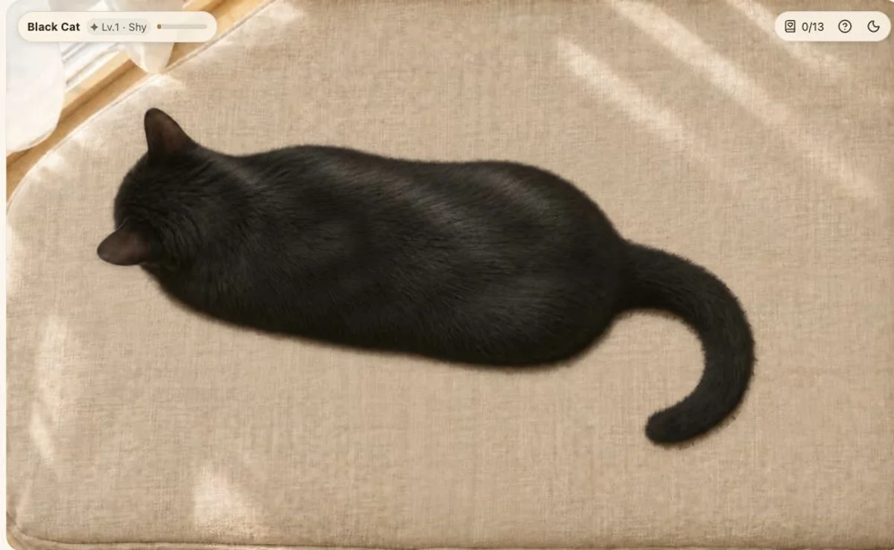
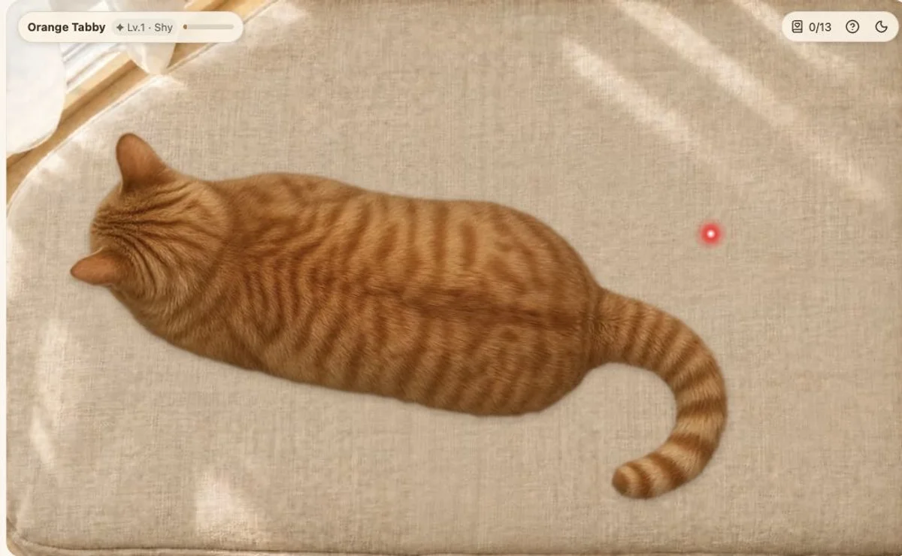
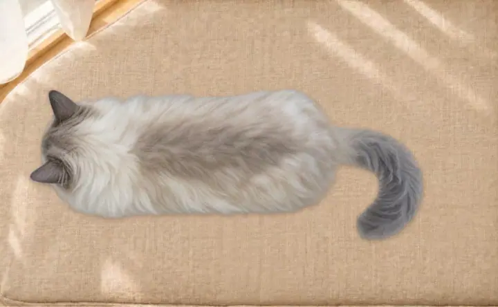
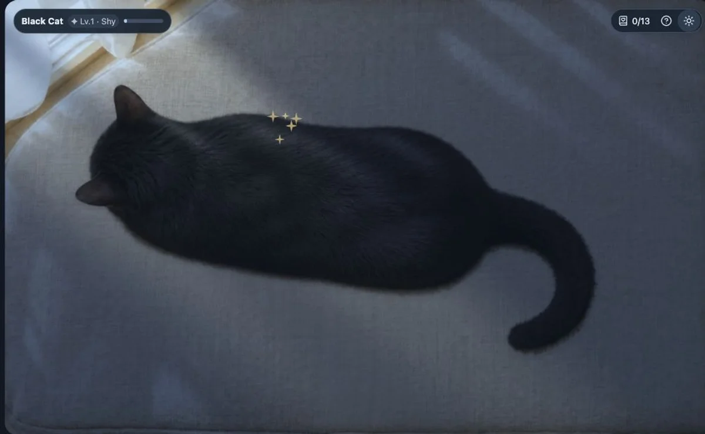

Free Pet the Cat Online
Pick one of 13 virtual cats and give it a few strokes. Hear it purr, make it chase a feather, or settle in together under the moonlight.
Back to the gameHow to pet a virtual cat
Choose your cat
Pick a Siamese, Ragdoll, Siberian, or Norwegian Forest Cat. You can also try an orange tabby, a calico, or one of the other coats. The size and width sliders let you make each cat smaller, bigger, slimmer, or rounder.
Give it a few strokes
Move your mouse or slide a finger over the cat’s head and back. Watch it react to your touch and turn on the speaker in the game to hear meows and purrs.
Try toys, fish treats, and accessories
Wiggle the feather wand or move the laser dot and see if your cat pounces. Complete cat wishes to earn fish treats, then tap the fish button to feed your cat. Try a little crown or sunglasses, or use the moon button to switch to the nighttime room.
Inside the cat room




Questions about your cat
Is Pet the Cat free to play online?
Yes. The game runs in your browser on a phone or computer, with no download or account.
How do I become best friends with a cat?
Spend time petting your chosen cat. Your bond starts at Shy and grows through Curious, Friendly, and Affectionate before reaching Best friends.
Where can I see how long I’ve spent with each cat?
Open Stats & Collection in the game to find your Petting Journal. It shows the cats you’ve met and your time with each one. Progress is saved in your browser when storage is available. The embedded player and the main site may have separate journals.
How can I hear my cat purr?
Turn on the speaker in the game, then stroke your cat slowly. If the game is still quiet, tap or click the play area so your browser can activate sound.